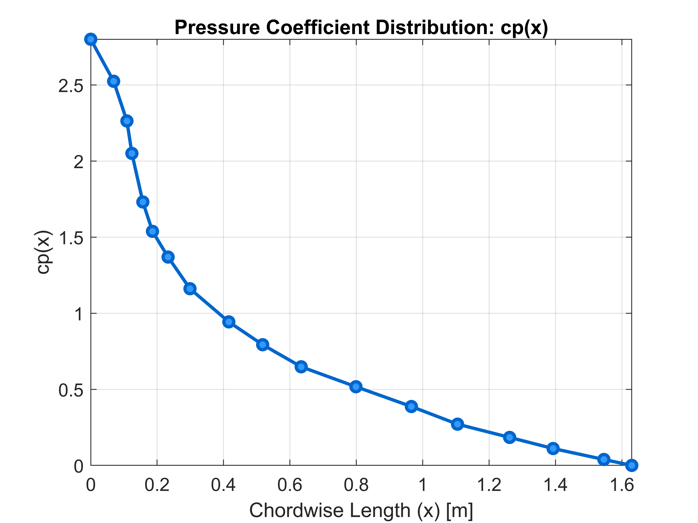
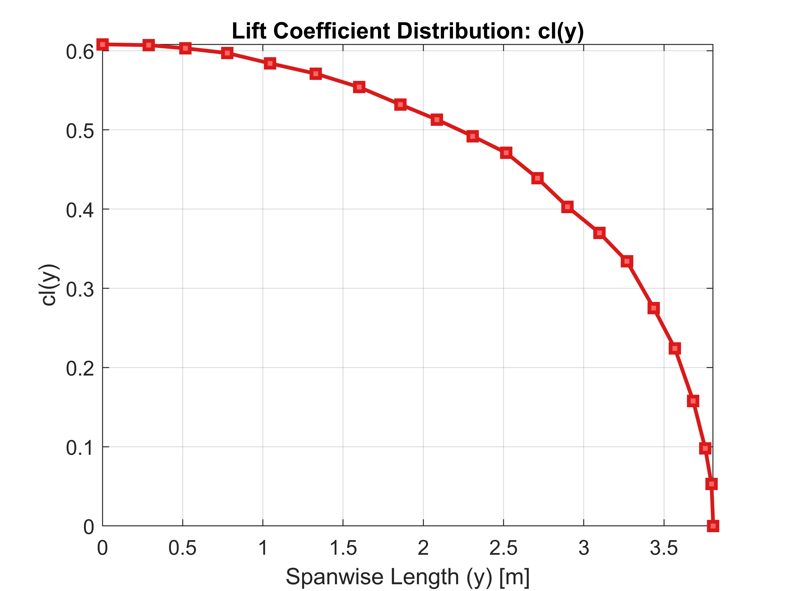
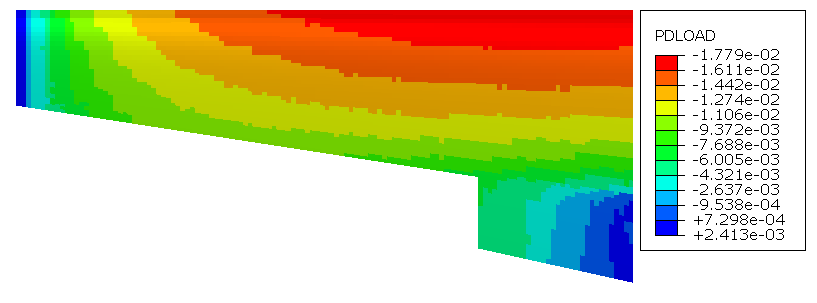
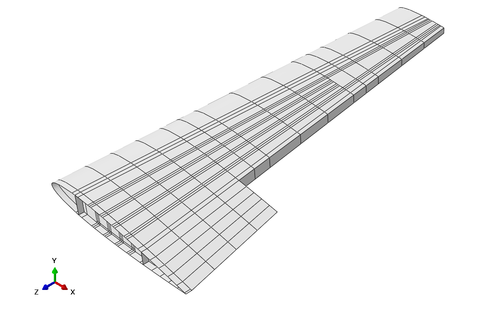

Overview
The goal of this project is the design and optimization of an aerobatic wing made out of composite materials. The Zivko Edge 540 single seater airplane was chosen to be a reference aircraft, from which the wing shape and certain flight parameters were used in the aerodynamic analysis and structural configuration selection process.

Zivko Edge 540 in an aerobatic maneuver
Reference parameters taken out of Pilot's Operating Handbook
| Parameter | Value |
|---|---|
| Empty Weight | 1320 lbs / 598.74 kg |
| Max gross T/O weight | 2200 lbs / 997.90 kg |
| G rating gross | ±3 |
| Max gross LDG weight | 2100 lbs / 952.54 kg |
| Max aerobatic weight single | 1600 lbs / 725.75 kg |
| G rating single | ±10 |
| Wing loading empty | 12.4 lbs/ft² / 60.54 kg/m² |
| Max airspeed V_NE | 230 kts / 425.96 km/h |
| Max full aerobatic airspeed V_a | 170 kts / 314.84 km/h |
| Power off stall V_so | 62 kts @ 2200 lbs / @ 997.90 kg |
| Max roll rate | 420°/sec |
| Max rate of climb | 3700 ft/min / 1127.76 m/min |
Aerodynamic Loads
To help with the configuration selection process, an aerodynamic analysis was conducted beforehand to extrapolate the pressure field at the marginal flight conditions. The whole process of calculating pressure coefficients was done in XFLR5, a computational tool for airfoils, wings, and planes.
An important thing to notice about XFLR5 is it uses inviscid theories (LLT, VLM1, VLM2, 3D Panel) which cannot accurately capture pressure gradients at higher Reynolds numbers (>1e7). As the “never exceed” velocity for the reference aircraft equals 230 kts, compressibility effects are expected. Per the note from XFLR5 documentation:
“The VLM and 3D method merely interpolate 2D viscous drag from local wing lift – not great…”
Consequences of this estimation are:
- Underestimation of total drag
- Over-estimation of glide ratio and other performance factors
Beyond these limitations, there are more to XFLR5, but these have the greatest impact on the results. As a result of the drawbacks listed above, resultant lift values are greater than those in real life scenarios. These greater lift values then consequently lead to greater loads on the wings, making the wing overbuilt by adding unnecessary mass with added structural elements and additional plies in composite layups.
Because Edge 540 uses a John Roncz symmetrical airfoil which isn't in the public domain so as an alternative NACA0012 airfoil was choosen as the most suitable replacement.

NACA0012 Airfoil
Measurements for the Edge 540 wing were taken out of the Pilot's Operating Handbook and are as follows:
- Wing span – 7.62 m
- Root chord length – 1.68 m
- Tip chord length – 0.84 m
Wings are installed at the mid level and exhibit no dihedral or twist angle.
Airfoil simulations were run for Re < 1×10⁷, after which half-wing runs were conducted. Plane analyses were set to run for angles of attack ranging from -15° to +15° in 1° increments. However, due to the limitations mentioned earlier, the solver could not converge beyond 9.5°.
As a result, the extrapolated pressure field corresponds to flight conditions of 230 kts and an angle of attack of 9°.

Pressure field on the upper surface of the wing

CL/CD plot obtained through 3D Panel method

Lift distribution over the wingspan
To get the two-dimensional pressure field, extrapolation of Cp(x) and L(b) curve coordinates was needed (pressure coefficients on upper and lower surfaces were subtracted). These two coordinate sets were then multiplied and normalized to obtain the 2D pressure field.
This field can then be scaled by the loading scalar ½ n m g, where:
- n – loading factor
- m – mass of the airplane
- g – gravitational constant
In this case, the loading scalar equals 0.5 × 726 × 9.81 = 42673.5 N. 1/2 in this case just means half of the mass since the calculations were done for one wing only.
All of the calculations were done in MATLAB. The resultant pressure field is presented below.
Extrapolated cp(x)
Extrapolated cl(y)
2D Pressure field over the wetted wing surface projection
For calculating the control surface force, hingemoment approximation found in Roskam Airplane Design Part VI Chapter 10 was used. Specifically, a Three-Dimensional Control Surface and Tab Hingemoment Derivatives method was used. The three-dimensional hingemoment coefficient for a control surface is estimated from:
ch = ch0 + chα α + chδ δ + chδt δt
ch0 - zero angle of attack, zero control surface deflection and zero tab deflection hingemoment coefficient – for symmetric airfoils equals 0
chα - three dimensional control surface hingemoment derivative due to angle of attack
chδ - three dimensional control surface hingemoment derivative due to control surface deflection
chδt - three dimensional control surface hingemoment derivative due to a tab deflection
First step is to calculate chα and needed variables.
chα = [A · cos(Λc/4)] / [A + 2 · cos(Λc/4)] · (chα)M + Δchα
Because there is no sweep angle on the wing, cos(Λc/4) = 0.
(chα)M = (chα)balance / √(1 - M2)
(chα)balance is calculated from all the necessary parameters found in Fig.10.65a.
Since there is no overhang, balance ratio is equal to tc / (2 cf) = 84 / (2 × 260) ≈ 0.162, making
(chα)balance / c"&sub>hα ≈ 0.91 (Read from diagram below for round nose).

Effect of Nose Shape and Balance on the Two-Dimensional Hingemoment Derivative due to Angle of Attack
c"&sub>hα is obtained from:
c"&sub>hα = c'hα + 2 (clα)theory [1 - {clα / (clα)theory}] {tan(Φ'te / 2) - (t / c)}
c'hα = (c'hα / (chα)theory) (chα)theory
Per the instructions for Eq. 10.128, if the condition:
tan((Φ'te) / 2) = tan((Φ''te) / 2) = tan(Φte / 2) = t / c
is satisfied, then c''hα = c'hα. This then leads to
c''hα = 0.77 × -0.4 = -0.308. Proof of Eq. 10.128 shows that the upper and lower boundaries of the trailing edge are non-curved lines.
Two-Dimensional Control Surface Hingemoment Derivative due to Angle of Attack
This leads us to finally being able to get (Chα)balanced. If (chα)balanced / c"&sub>hα ≈ 0.91 then (chα)balanced = -0.2803.
Now that we know (chα)balanced, we can calculate (Chα)M for M = 0.35 (VNE≈119 m/s).
(Chα)M = -0.2992
ΔChα = ((ΔChα) / (clα B2 Kα cosΛc/4)) × (clα B2 Kα cosΛc/4)
((ΔChα) / (clα B2 Kα cosΛc/4)) - a factor obtained from Figure 10.77a
clα - airfoil lift-curve slope of the surface to which the control surface is attached
B2 – accounts for control surface and balance chord ratios – determined from Figure 10.77c
Kα – accounts for the effect of control surface span – found from:
Kα = [ (Kα)ηi (1 - ηi) - (Kα)η0 (1 - η0) ] / (η0 - ηi)
ηi – inboard span station of the control surface as a fraction of the main surface semi-span
(Kα)ηi – found from Figure 10.77b
η0 – outboard span station of the control surface as a fraction of the main surface semi-span
(Kα)η0 – found from Figure 10.77b
Reading the diagram in Fig.10.77a, ((ΔChα) / (clα B2 Kα cosΛc/4)) for aspect ratio of 8.23 is 0.004.
Since the aileron spans from 25.2% of the wingspan inboard all the way to the wing tip, η0 will be 1, because the aileron's outward rib is colinear to the wing's tip rib. For ηi = 0.252, (Kα)ηi = 1.35. For η0 = 1, (Kα)η0 = 4.25. Considering this:
Kα = 1.35
B2 is obtained from diagram in Fig.10.77c for c'f / c' ≈ 0.2063.
B2 = 1.05
Clα was calculated in XFLR5 and is valued at 0.11848.

Three-Dimensional Correction Factors for the Control Surface Hingemoment Derivative due to Angle of Attack
We can now calculate for extrapolated values, ΔChα:
ΔChα = 0.0006718
Finally, we can obtain the final value of three dimensional control surface hingemoment derivative due to angle of attack:
Chα = -0.2986
Second step is the calculation of Chδ:
Chδ = (cosΛc/4) (cosΛhl) × [ (chδ)M + αδ (chα)M ( (2 cosΛc/4) / (A + 2 cosΛc/4) ) ] + ΔChδ
(chα)M = -0.2992
(chδ)M = (chδ)bal / √(1 - M²)
αδ = 0.5 (obtained from Fig.8.17 for 30° aileron deflection)
We will start with (chδ)M. Solution to this coefficient follows the same path as the one for (Chα)M, so any unnecessary descriptions will be omitted for this step.
(chδ)bal = c"hδ × { (chδ)bal / c"hδ }
c"hδ = c'hδ + 2 (clδ)theory × [1 - { clδ / (clδ)theory }] × { tan(Φ'te/2) - (t/c) }
(chδ)bal / c"hδ ≈ 0.91
Because it was proven before that c"hδ = c'hδ, it follows that:
c"hδ = (c'hδ / (chδ)theory) × (chδ)theory
c"hδ = 0.91 × -0.77 = -0.7007
Two-Dimensional Control Surface Hingemoment Derivative due to Control Surface Deflection
For the round nose and a balance ratio of 0.162, reading a diagram in Fig.10.71, we find (chδ)balance to be around -0.5676.
Effect of Nose Shape and Balance on the Two-Dimensional Control Surface Hingemoment Derivative due to Control Surface Deflection
Finally we get:
(chδ)M = (chδ)bal / √(1 - M²) = (-0.5676) / √(1 - 0.35²) = -0.6059
Next, we ought to calculate ΔChδ:
ΔChδ = ((ΔChδ) / (clδ B2 Kδ cosΛc/4 cosΛhl)) × (clδ B2 Kδ cosΛc/4 cosΛhl)
The first member of the equation is a factor obtained from Fig.10.78a.

Three-Dimensional Correction Factors for the Control Surface Hingemoment Derivative due to Control Surface Deflections
clδ is found in Fig.8.14 with the value of 0.37. Kδ is basically the same as Kα with a different index and has the same value of 1.35. Same goes for B2, which is 1.05.

Lift Effectiveness of a Plain Flap
We can now get ΔChδ:
ΔChδ = 0.009 × 0.37 × 1.05 × 1 = 0.00349
Lastly,
Chδ = 1 × [ -0.6059 + 0.5 × (-0.2992) × (2 / (8.23 + 2)) ] + 0.00349
Chδ = -0.6314
Since tab isn't considered in the design, three-dimensional control surface hingemoment derivative due to a tab deflection will be considered zero.
After calculating the needed coefficients, we get estimated total three-dimensional hingemoment coefficient for a control surface:
Ch = Chα α + Chδ δ = -0.2986 × 0.1658 - 0.7239 × 0.5236
Ch = -0.4285
Negative coefficient value means the moment is acting opposite to the direction of the control surface deflection. Basically, the force acting upon the control surface wants it to return to the neutral position.
If hingemoment equals:
Mhinge = (1/2) ρ∞ v∞2 Saileron MACaileron Ch
ρ∞ = 1.225 kg/m3
v∞ = 119 m/s
Saileron = 0.9868125 m2
MACaileron = 0.34625 m
|Mhinge| = 1269.92 Nm
Force on hinge:
Fhinge = Mhinge / MACaileron
Fhinge = 3667.63 N
Multiplying Fhinge by a loading factor of 12G gives the hinge force applied to the aircraft under maximum loading conditions:
Fhinge12g = 44011.56 N
This force will be applied to the rib edges in the direction of the lift.
Wing Structure
Starting idea of the project was to test out how different stiffening solutions affect the structural response of the wing. After making few iterative models, it was noticed that only using the honeycomb core inside of the wings' skin, noticeably lowers the overall wing stiffness thus increasing the susceptibility of critical points to failure. It was then decided that the wing skin will only be stiffened using 'T' profiled stiffeners, or stringers, since combined use of honeycombs and stringers is redundant and adds unnecessary mass to the structure.
Spar Placement
Usually, wing spars are placed at about 25% and 65% of wings' chord length. This matches the maximum thickness of the airfoil and the location of the aerodynamic center of the wing. By looking at the pressure field obtained in the previous chapter, it can be noticed that the maximum pressure acting upon the wing is located between 0 and 200 mm from the leading edge. If this was the only criteria it would lead to the front spar being positioned at 200 mm or around 12% of the root chord length so the environmental loads get effectively transferred to the spars caps. This positioning would put the front spar too much forward of the desireable wings center of gravity. Considering aswell, that the maximum thickness for the NACA0012 airfoil used for the wing is located at 30% of the airfoils chord, it was then decided that a good compromise between the two facts be to place the front wing spar at around 20% of the root chord or 345 mm from the leading edge.
Aft spar location was decided by measuring the control surface dimensions of the reference airplane Edge 540 (ailerons). Aft spar location on the root chord is measured at 1176 mm and 588 at the tip which makes it positioned at 70 % of the root and tip chord length respectively. Aft spar will be used as a fixture location for the aileron.
Rib Spacing
Rib positioning was obtained through an iterative process of simple buckle analyses and was set to 240 mm spacing (14.3 % of the root chord length) at the inner section of the wing (pre aileron) and 356.25 mm spacing(21.2 % of the root chord length) in the aileron zone. Since the wing is being optimized only in regards to the static analysis, buckle analyses might show the wing to be oversized (aswell as undersized) in regards to buckling - if that happens it is possible to increase/decrease the rib spacings and thus reduce the number of ribs in the wing. Considering the expected mass of one rib is around 200 g, (Mass of the inner section rib is 208 g) having 3 or 4 extra ribs throughout the wing doesn't impact the overall wing mass in any significant way.
Stringer Layout
4 stringers were placed equidistantly between the wing spars (measured from caps edges, wing box side). For the last 4 sections of the wing, only the outer stringers are present, since there isn't enough space for all of the stringers to be extended root-to-tip - low wing tip side buckling loads were considered during this design decision.

Wing CAD model imported into Abaqus
Materials and Layups
See chapter "Wing Structure".
Numerical Model
See chapter "Wing Structure".
Optimization
See chapter "Wing Structure".
Results
See chapter "Wing Structure".